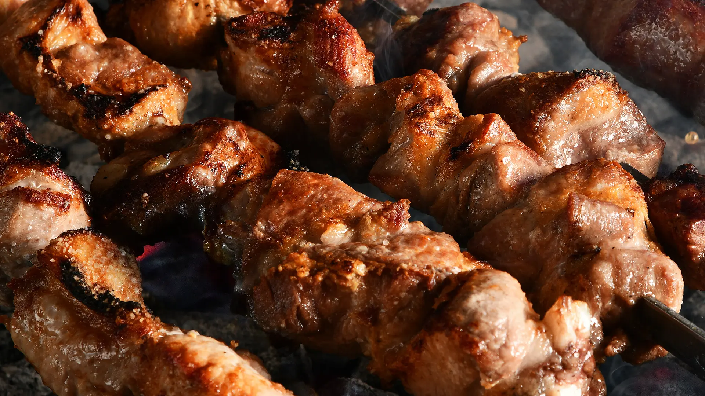

<!-- empty ტაგი არის ტაგი რომელსაც არ სჭირდება დამხურავი ტაგი container ტაგისგან გასხვავებით -->
<!-- head ტაგი გამოიყენება სეარჩ ენჯინის ოპტიმიზაციაში , იგი აქვდის იმფორმატიაც რომელიც ეხმარება საიტს მიიღოს უფრო მაღალი პრიორიტეტი body ტაგი გამოარჩევს თვითონ საიტის კოდს სეარჩ ენჯინისთვის კოდისგან და შეიცავს თვითონ საიტის აგებულებას  -->
<!-- სურათებისთვის ვიყენებთ img ტაგს და ის არის ემპტი ტაგი -->
<!-- ალტ ატრიბუტი გამოიყენება ფოტოს ალტერნატიური სახელის მისაცემად -->
<html>
    
    
    
    
</html>